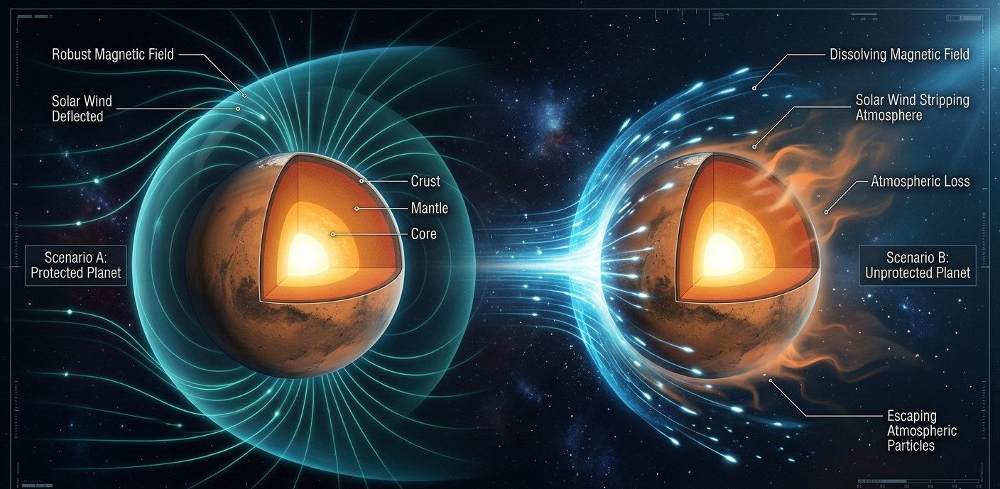

Around 4 billion years ago, Mars was not the barren wasteland we see today. It had a rich atmosphere and all the conditions necessary for life — though whether life ever existed there is still up for debate.
Mars no longer has a magnetic field because its core has cooled and solidified. This left the planet vulnerable to solar wind, which stripped away its atmosphere and transformed it into the bleak, desolate world we know today.
4B Years ago
0 Magnetic field today